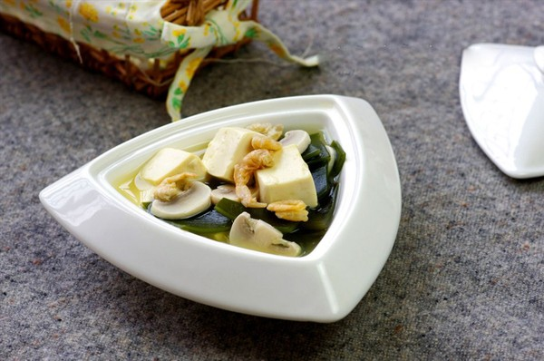

Canh rong biển tàu hũ

- Khẩu phần4
- Chuẩn bị 20 phút
- Thực hiện 15 phút
Nguyên liệu
- 100g tàu hũ non, cắt miếng vừa ăn
- 30g nấm rơm, ngâm nước lạnh
- 30g nấm linh chi nâu, ngâm nước lạnh
- 30g nấm linh chi trắng, ngâm nước lạnh
- 20g cà rốt, cắt lát mỏng
- 10g rong biển khô, ngâm nước
- 4g gừng tươi
- 0,2 g (¼ mcf) tiêu xay
- 2g muối
- 0,3g dầu mè
- 1 lít (4 chén) nước
- 15g (3 mcf) Hạt nêm từ Nấm & Rong biển
Hướng dẫn thực hiện
- Ngâm tàu hũ vào nước sôi
- Luộc sơ các loại nấm và rong biển.
- Đun sôi 1 lít nước, cho tất cả các nguyên liệu vào nấu chín
- Nêm với muối và Hạt nêm từ Nấm & Rong biển cho vừa ăn
- Thêm dầu mè và rắc tiêu xay. Dùng nóng.